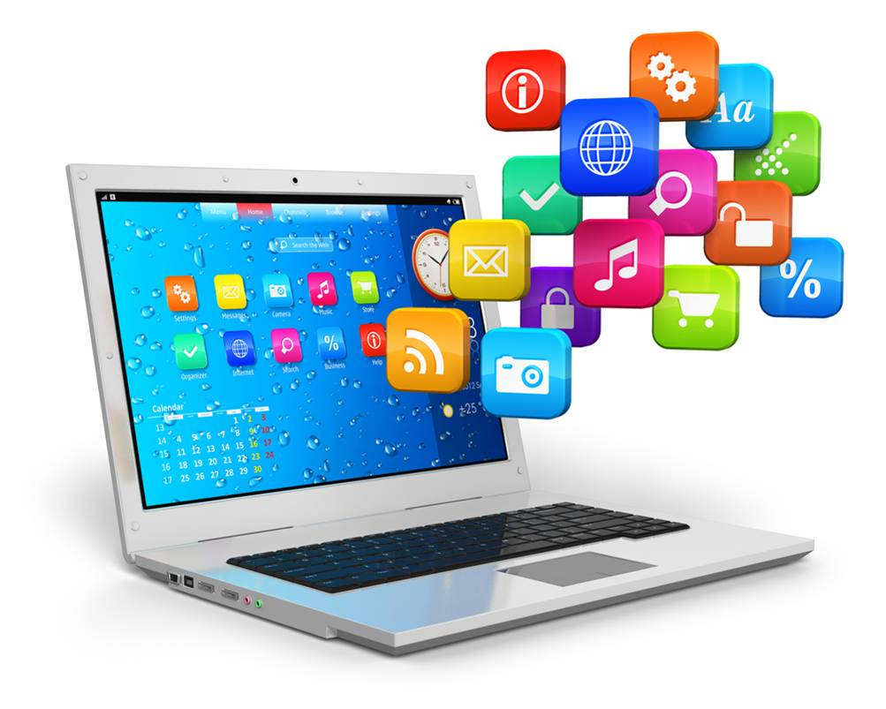
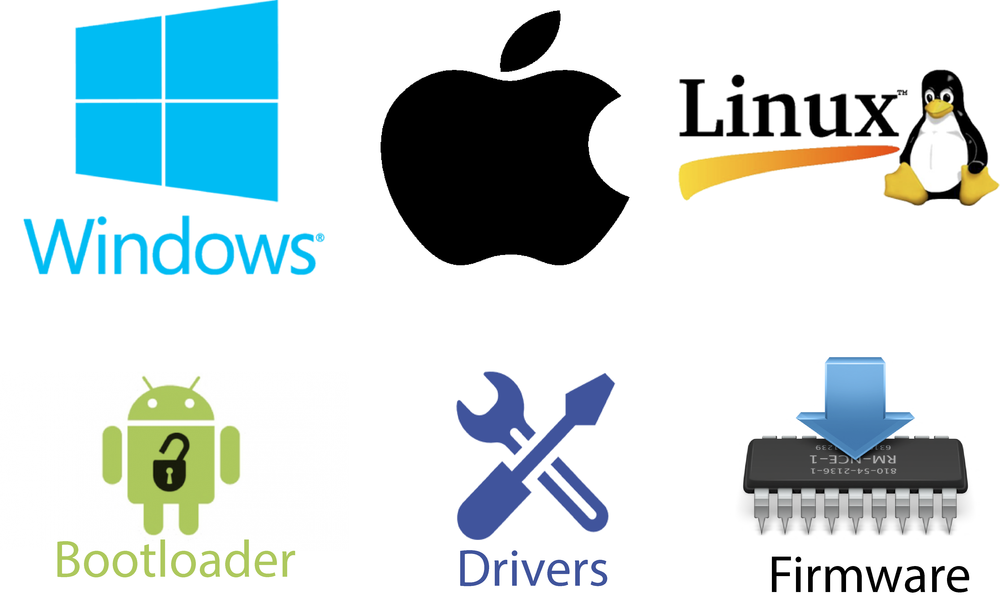

La computadora y sus partes
¿Qué es la computadora?
Un computador, computadora u ordenador es una máquina digital programable, de funcionamiento electrónico, capaz de almacenar información para el usuario

La enorme cantidad de componentes de una computadora pueden agruparse en dos categorías separadas, que son:
- Hardware:
La parte física y tangible del sistema, o sea, sus componentes que podemos tocar.
- Software:
La parte intangible, digital, abstracta del sistema que manipula datos.
Hardware
En computación e informática, se conoce como hardware al conjunto de los componentes materiales, tangibles, de un computador o un sistema informático. Sus partes son:
- Procesador:
Es el cerebro del sistema. Procesa todo lo que ocurre en la PC y ejecuta todas las acciones que existen.
- Memoria RAM:
Memoria principal del dispositivo donde se almacenan de forma temporal los datos de los programas usados en el momento.

Software
El término software es un vocablo inglés que fue tomado por otros idiomas y designa a todo componente intangible (y no físico) que forma parte de dispositivos como computadoras, teléfonos móviles o tabletas y que permite su funcionamiento.
- Software de Aplicación:
Programas diseñados para realizar una o más tareas específicas a la vez, pueden ser automáticos o asistidos. Por ejemplo: videojuegos o reproductores multimedia.

- Software de Sistemas:
Programas que dan al usuario la capacidad de relacionarse con el sistema, para ejercer control sobre el hardware. El software de sistema también se ofrece como soporte para otros programas. Por ejemplo: sistemas operativos o servidores.

- Menú principal